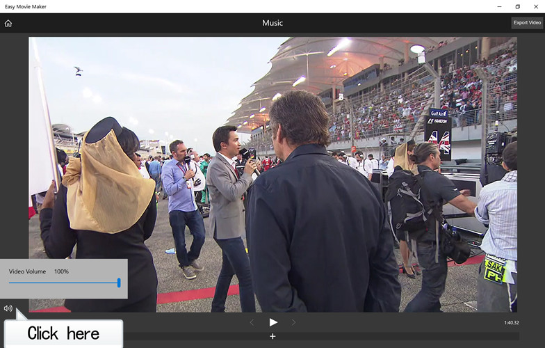
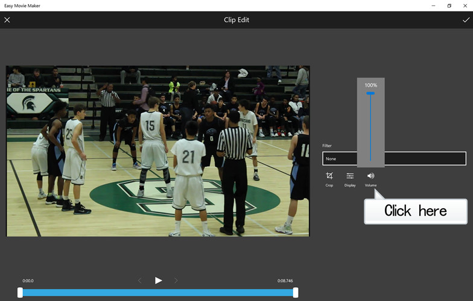

There are two ways to set the volume of video.
1. Go to the "Music" page by click "Add Music" on the main page, click to control the video's volume.

2. Go to the "Clip Edit" page while you add or edit a project, click to set the volume of the video clip.
